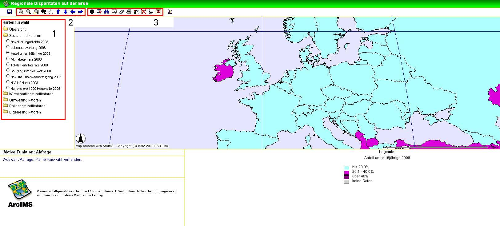
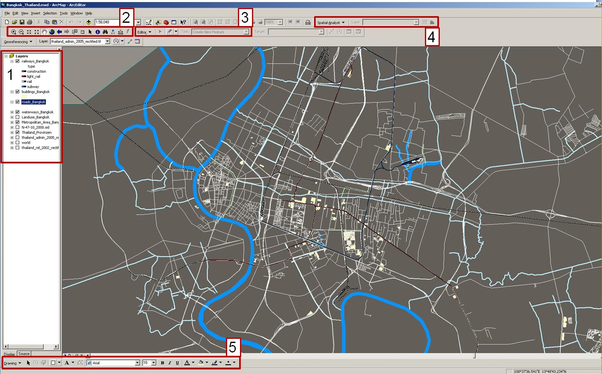
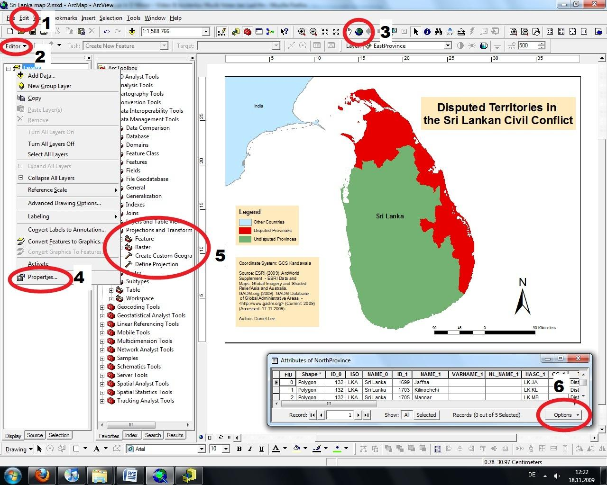
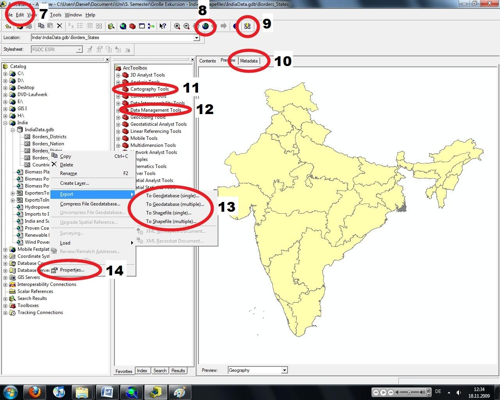
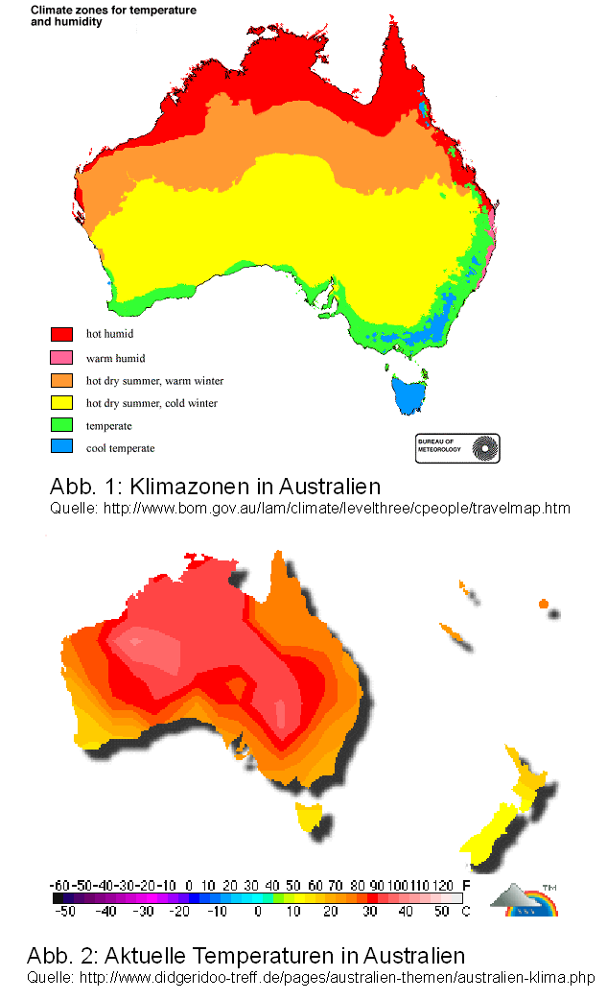
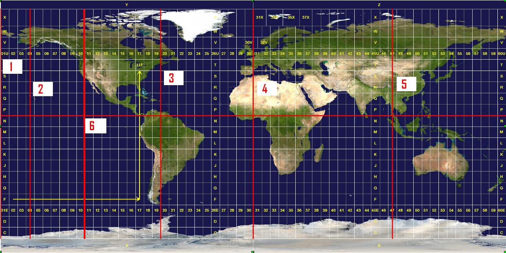
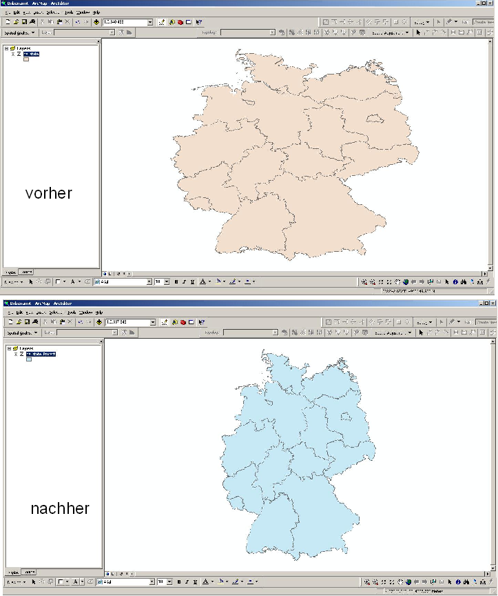

Wissens-Check
Welche der nachfolgenden Werkzeuge eines Geographischen Informationssystems sind in den mit roten Kästen (mit den Ziffern 1-3) markierten Bereichen identifizierbar?

Sie haben noch nicht alle richtigen Antworten angekreuzt!
Weisen Sie den mit roten Kästen (mit den Ziffern 1-5) markierten Bereichen die richtige Bezeichnung zu.

1,1 Inhaltsverzeichnis Layer
1,2 Auswahlwerkzeuge
2,2 Navigationswerkzeuge
5,5 Gestaltungswerkzeuge
1,1 Datenrahmen
4,4 Analysewerkzeuge
1,2 Auswahlwerkzeuge
2,2 Navigationswerkzeuge
5,5 Gestaltungswerkzeuge
1,1 Datenrahmen
4,4 Analysewerkzeuge
Sie haben mehrere Shapefiles welche die
?
?
?
Sie haben noch nicht alle richtigen Antworten angekreuzt!
Welche der folgenden Tools/Buttons könnten Sie benutzen, um einer
Datenebene (Datensatz) ein Koordinatensystem zuzuweisen?

(GIS.MA 2009)
(GIS.MA 2009)Sie haben noch nicht alle richtigen Antworten angekreuzt!
Wie können Sie die räumliche Ausdehnung eines Datensatzes mit Hilfe der
Software ArcGIS herausfinden?
?
?
?
Sie haben noch nicht alle richtigen Antworten angekreuzt!
Sie haben noch nicht alle richtigen Antworten angekreuzt!
Welcher der zwei Abbildungen liegt Ihrer Auffassung nach ein
raum-kontinuierlicher, und welcher ein raum-diskreter Datensatz
zugrunde?

(GIS.MA 2009)Sie haben noch nicht alle richtigen Antworten angekreuzt!
Welche der Zuordnungen ist korrekt?
Sie haben noch nicht alle richtigen Antworten angekreuzt!
Welche Merkmale unterscheiden Geodaten von anderen Daten?
?
Sie haben noch nicht alle richtigen Antworten angekreuzt!
„Bei welcher/welchen der rot eingetragenen Linien handelt es sich um
einen Mittelmeridian der UTM_WGS_1984 Projektion?

Sie haben noch nicht alle richtigen Antworten angekreuzt!
Welche der folgenden Eigenschaften ist nicht bedeutsam für die
geographische Referenzierung eines Datensatzes?
Sie haben noch nicht alle richtigen Antworten angekreuzt!
Was versteht man unter False
Northing?
Was bedeutet der Begriff Rektifizieren?
Betrachten Sie nachfolgende Darstellung des Deutschlandkarte in ArcMap
jeweils vorher/nachher. Welche der folgenden Arbeitsabläufe führt zu dieser
Veränderung? Tipp: Bei der Vorher-Darstellung handelt es sich laut Metadaten um:
Geographic Coordinate System: GCS_ETRS_1989

Sie haben noch nicht alle richtigen Antworten angekreuzt!